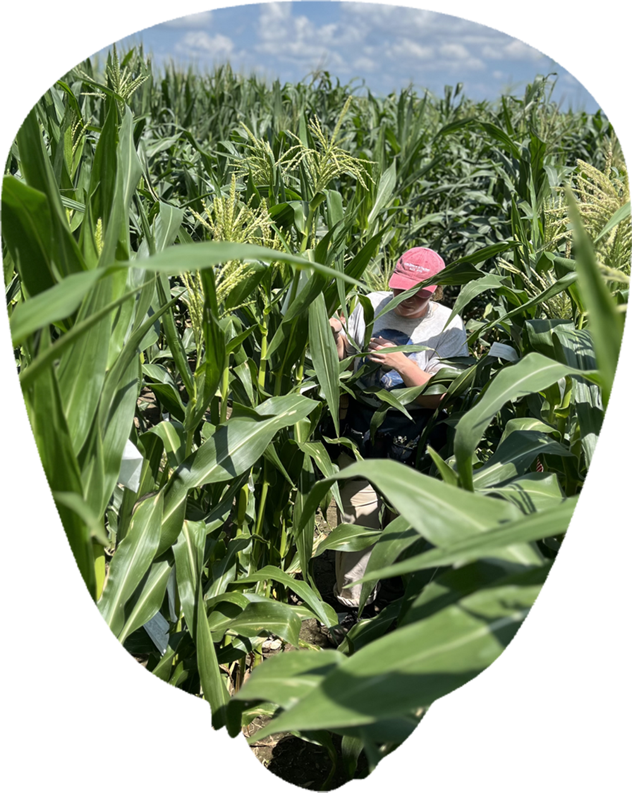
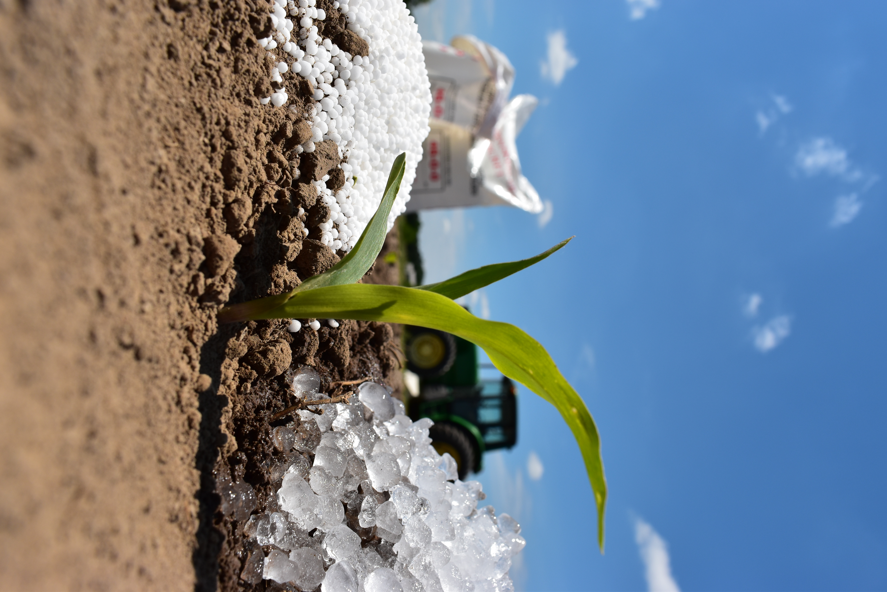
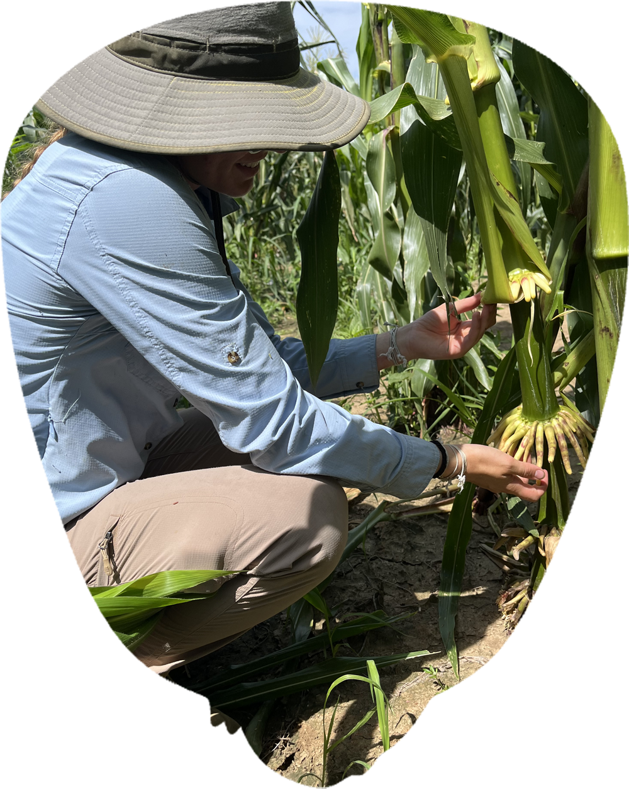
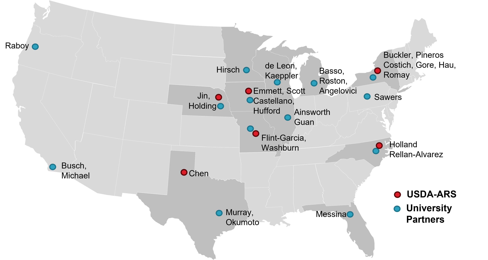
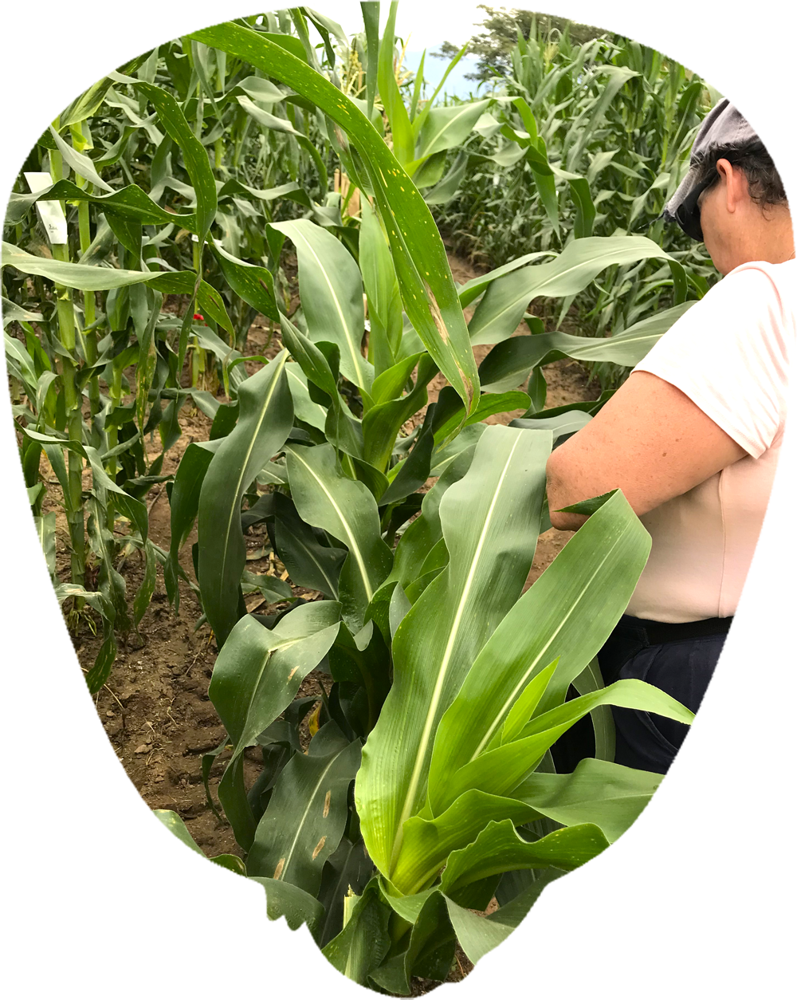

Season dynamics
Modeling plants, farms, environments and economics to determine the most important combinations of traits and U.S. environments.
Explore MoreA new generation of maize designed for modern farming, built to perform under pressure: leverage maize's photosynthesis, reduce input dependency, increase yield, and minimize environmental impact.
Grounded in advanced plant science and designed for real world fields CERCA - Circular Economy that Reimagines Corn Agriculture - comes from a simple observation: temperate maize systems leave value on the table when crop biology, spring nitrogen availability, and the farm calendar are out of sync.


CERCA connects discovery to real-world outcomes through a simple chain.
Identify useful biological diversity linked to early vigor, nitrogen use efficiency, and better adaptation.
Turn that variation into visible crop function: stronger seedling establishment and better nutrient uptake and light interception.
Test whether those traits improve developmental timing, plant resilience, nitrogen capture, and increase yield.
Measure whether better biology translates into higher value and improved land stewardship.
Help maize use early-season light and spring soil nitrogen.
Shift emphasis toward the starch value most markets reward.
Reduce avoidable losses and support a tighter nutrient loop.

Modeling plants, farms, environments and economics to determine the most important combinations of traits and U.S. environments.
Explore MoreEvaluating related wild and domesticated species that have cold tolerance and recycle nutrients to discover traits, then determine the genetic basis of the traits.
Explore MoreDeveloping these traits by stacking together the genetic improvements researchers predict will achieve their goals of nitrogen redistribution.
Explore More
Farmers respond to windows, bottlenecks, and margins—not abstract ideals.
Each dollar of fertility can support more harvestable value.
CERCA works better when it respects farmers as decision-makers and operators.
“The best agricultural innovation stories do not ask rural communities to choose between productivity and responsibility.”

Click each location to meet the collaborators contributing expertise across genetics, agronomy, modeling, economics, and outreach.

By integrating genetics, field performance, and economic perspectives, this collaboration ensures that innovations are not only scientifically sound, but also practical, scalable, and meaningful for farmers.
CERCA is strengthened by the support of institutions and partners committed to advancing resilient, nitrogen efficient maize systems.
We are grateful for the organizations that contribute expertise, infrastructure, and shared vision to help translate interdisciplinary research into practical agricultural impact.
